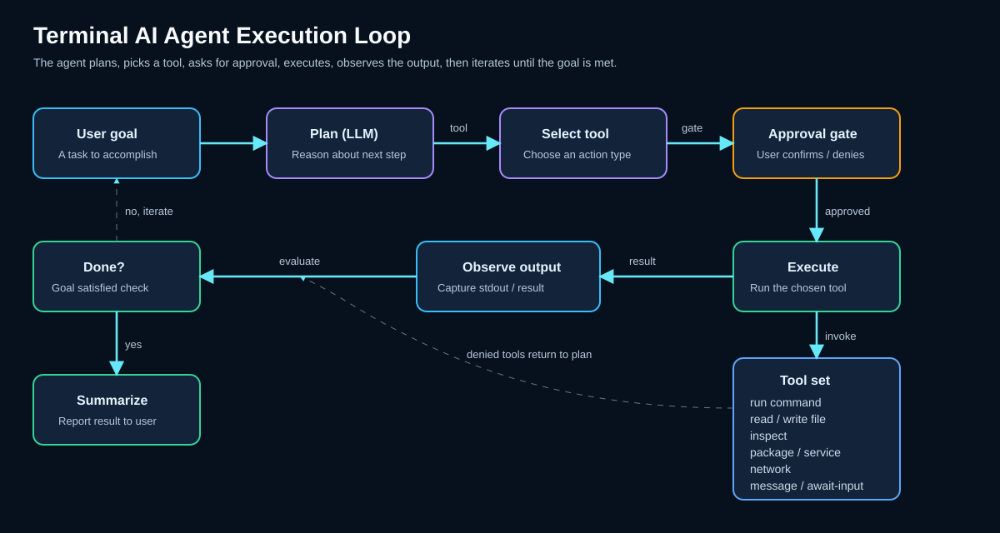

Terminal-KI-Agent und -Tools¶
Der Terminal AI Agent von korTTY ist ein kontrollierter Automatisierungsworkflow, der eine sichere, intelligente Befehlsausführung auf Remote-Servern ermöglicht – und, da die Ausführungs-Engine hinter einer AgentCommandRunner-Abstraktion (SSH-Exec-Channel und lokale Prozess-Backends) entkoppelt wurde, auch in local-Shells unter Windows, macOS und Linux. Im Gegensatz zur naiven Automatisierung prüft der Agent den Sitzungsstatus, begründet jeden Schritt und wartet auf die Zustimmung des Menschen, bevor er systemverändernde Befehle ausführt.
SSH vs. lokale Shells
In lokalen Shells verwenden Befehle ein natives lokales Backend (PowerShell über -EncodedCommand, cmd.exe oder POSIX /bin/sh) und der Umgebungstest und die Systemeingabeaufforderung sind plattformorientiert. Der Agent erfasst das aktuelle Verzeichnis der interaktiven Shell, wenn ein Lauf startet, und verwendet denselben Snapshot für seine Sonde und jeden Befehl im Lauf. Im Flatpak-Paket werden diese Prozesse auf dem Host über flatpak-spawn --host und nicht innerhalb der Freedesktop-Laufzeit-Sandbox ausgeführt. Einschränkungen der lokalen Shell: keine sudo/Administrator-Erhöhung unter Windows. Die kopflose KI-Agent-Aktion des JobScheduler bleibt nur SSH.

RAG ist explizit für autonomes Arbeiten
Wissensspeicher, die normalen Text-/Codierungsanfragen zugewiesen sind, erweitern nicht automatisch den Kontext des Terminal AI Agent, der Planung, des Schwarms oder des geplanten Jobs. Diese autonomen Flüsse erfordern ein explizites RAG-Opt-in; siehe RAG Wissensspeicher. Dadurch wird verhindert, dass ein Hintergrundworkflow indizierte lokale Quellen liest, nur weil dasselbe Modellprofil für den interaktiven Chat verwendet wird.
Befehlsvarianten¶
Der Terminal AI Agent wird über Shortcut-Befehle am Shell-Prompt ausgelöst. Wenn KorTTY unter Einstellungen > AI aktiviert ist, fängt KorTTY diese Befehle lokal ab, anstatt sie an den Server zu senden:
Der Basisbefehlsname kann unter Einstellungen > AI konfiguriert werden. Wenn Sie agent umbenennen, leitet KorTTY automatisch die passenden Befehle -ask und -plan ab. Die gleiche Einstellungsseite kann:
- Machen Sie beim Befehlsnamen keine Berücksichtigung der Groß-/Kleinschreibung
- Deaktivieren Sie den Einrichtungsdialog pro Lauf (verwendet das konfigurierte Standardprofil, wenn es deaktiviert ist)
Note
KorTTY erkennt diese Verknüpfungen im Connector-Eingabepfad vor der normalen Shell-Ausführung. Tastatureingaben und Einfügen in die Zwischenablage werden aus demselben Bytestrom zusammengestellt, sodass eingefügte Dateinamen und Unicode-Text in der Anfrage enthalten sind, die vollständige Eingabeaufforderung im Agentenverlauf gespeichert wird und eine Eingabe genau eine Agentenausführung erzeugt.
Befehlszwecke¶
agent <goal>– Führen Sie sichere Terminalbefehle aus, um ein Ziel zu erreichen. Der Agent prüft die Sitzung, plant nicht interaktive Befehle, fordert bei Bedarf eine Genehmigung an und schreibt (standardmäßig) die endgültige Antwort zurück an das Terminal. Das Ausführungsdialogfeld bietet die Option Endgültige Antwort auch im Terminal anzeigen: Lassen Sie diese Option aktiviert, um die Antwort im Terminal zu spiegeln, oder schalten Sie sie aus, damit die Antwort nur im Aktivitätsfenster des KI-Agenten verbleibt. In beiden Fällen werden die Befehle weiterhin ausgeführt und ihre Ausgabe sowie alle von ihnen erstellten Dateien verbleiben auf dem Server. Lediglich die Anzeige des endgültigen Antworttextes ändert sich. Die letzte Auswahl wird als Standard gespeichert.agent-ask <question>– Erhalten Sie eine nicht ausführende Antwort zum aktuellen Sitzungskontext, ohne irgendwelche Befehle auszuführen. Wenn Sie über das Kontextmenü des Terminals (AI → Ask AI Agent) mit ausgewähltem Text starten, wird die Auswahl als Kontext gesendet, sodass die Frage zur ausgewählten Ausgabe oder zum ausgewählten Skript beantwortet wird.agent-plan <task>/agent -plan <task>– Wechseln Sie zuerst in den Planungsmodus. Der Agent stellt klärende Fragen, schlägt Vorgehensweisen vor, erstellt einen endgültigen Plan und führt die Implementierung erst durch, nachdem Sie auf Umsetzen geklickt haben.
Beispiele¶
agent show the 10 largest XML files in this directory
agent update groesste_xml.pl so the -r flag searches subdirectories recursively
agent check why nginx failed to start and suggest the safest fix
agent-ask what user and directory am I currently using?
agent-plan migrate this host from package X to package Y
TAB Abschluss- und Eingabeaufforderungsverlauf¶
An der Shell-Eingabeaufforderung wird die TAB-Vervollständigung für Agentenbefehle verbessert:
- Geben Sie den Namen des Agentenbefehls ein (z. B.
agent) und drücken Sie dann Tab, um Befehlsvarianten anzuzeigen (agent,agent-ask,agent-plan). - Geben Sie den Befehl + ein Leerzeichen ein (z. B.
agent) und drücken Sie dann Tab, um den aktuellen Verlauf der Agentenaufforderungen anzuzeigen. In jeder Zeile werden die Eingabeaufforderung und das Datum/die Uhrzeit der letzten Ausführung angezeigt, dedupliziert durch den Eingabeaufforderungstext (neuester zuerst). - Eingabeaufforderungen mit mehr als 60 Zeichen werden zur besseren Lesbarkeit mit Auslassungspunkten gekürzt. Bei Auswahl wird weiterhin die vollständige Eingabeaufforderung eingefügt.
- Die Größe des Verlaufs-Popup kann geändert werden – ziehen Sie den Griff in der unteren rechten Ecke – und merkt sich seine Größe bei jedem Neustart. Es zeigt eine vertikale Bildlaufleiste an, wenn der Verlauf die Popup-Höhe überschreitet.
- Klicken Sie im Verlaufs-Popup auf die Schaltfläche ✕ einer Zeile (oder drücken Sie Del auf Tastaturen mit Vorwärts-Löschen-Taste), um eine einzelne Eingabeaufforderung zu entfernen, oder verwenden Sie Alle löschen (Bestätigung in zwei Schritten), um den gesamten Verlauf zu löschen. Löschungen werden sofort gespeichert.
- Außerhalb dieses Kontexts bleibt Tab die normale Shell-Vervollständigung.
Die Verlaufsgröße kann unter Einstellungen > AI konfiguriert werden (Standard 20, Bereich 5–100).
So funktioniert der AI Agent¶
Der Terminal AI Agent folgt einer strengen, sicheren Ausführungsschleife:
- Sitzung prüfen – KorTTY prüft die aktive Terminalsitzung mit einem nicht interaktiven Befehl und zeichnet kompakten Kontext auf: aktueller Benutzer, Host, Betriebssystem, Arbeitsverzeichnis des aktiven Terminals, Sudo-Verfügbarkeit, Festplattenpfad und aktueller Befehlsstatus.
- Kontext an das Modell senden – KorTTY sendet die Benutzeraufgabe, den Sonden-Snapshot, frühere Befehlsergebnisse, aktive KI-Fähigkeiten und optional die Web-Tool-Verfügbarkeit an das ausgewählte KI-Profil.
- Modell gibt eine JSON-Entscheidung zurück – Das Modell muss eine strikte JSON-Antwort zurückgeben: Befehle ausführen, um Bestätigung bitten, beenden oder blockieren.
- Entscheidung validieren – KorTTY validiert das JSON-Schema und die Befehlseinschränkungen. Ungültige Antworten werden einmalig repariert; unsichere oder nicht unterstützte Entscheidungen werden abgelehnt.
- Genehmigte Befehle ausführen – KorTTY führt genehmigte Befehle über das aktive Backend aus: SSH-Ausführungskanäle für SSH-Sitzungen oder einen neuen lokalen Prozess für lokale Shells. Jeder Befehl startet im verfolgten aktiven Terminalverzeichnis, das für diese Ausführung erfasst wurde. Ein
cdinnerhalb eines einmaligen Befehls bleibt nicht bis zum nächsten Befehl bestehen, während ein interaktivercd, der vor der Ausführung abgeschlossen wurde, im erfassten Verzeichnis enthalten ist. - Iterieren oder abschließen – Die Befehlsausgabe wird dem Aktivitätsbereich und der nächsten Modellrunde hinzugefügt, bis die Aufgabe abgeschlossen, blockiert, abgebrochen oder das Rundenlimit erreicht ist (maximal 8 Runden).
Passende Aufgaben¶
- Untersuchung von Dateien, Verzeichnissen, Paketstatus, Protokollen, Dienststatus und Systemkonfiguration
- Erstellen oder Ändern von Skripten und Konfigurationsdateien, wenn die Aufgabe dies erfordert
- Ausführen von Tests, Syntaxprüfungen, Linters oder schreibgeschützten Diagnosebefehlen
- Zusammenfassung der Befehlsausgabe und Erläuterung der Ergebnisse
- Planung mehrstufiger betrieblicher Änderungen vor der Implementierung
Nicht geeignet für¶
- Interaktive Vollbildprogramme wie
vim,nano,top,less,sshoder Befehle, die auf Eingabeaufforderungen warten - Lange laufende Daemons oder Befehle ohne eindeutigen Abschluss
- Geheime Exfiltration oder blinde destruktive Befehle
- Webrecherche nach lokalen Dateien, es sei denn, der Benutzer fragt ausdrücklich nach externen/aktuellen Informationen
Tip
Benennen Sie bei lokalen Dateiüberprüfungsaufgaben die Datei in Ihrer Eingabeaufforderung. Der Agent sollte es dann mit Shell-Befehlen wie sed -n, cat, file oder sprachspezifischen Syntaxprüfungen überprüfen. Wenn ein internetfähiges Profil aktiv ist, hält KorTTY weiterhin Web-Tools von der lokalen Dateiplanung fern, es sei denn, Ihre Aufgabe verlangt eindeutig nach aktuellen oder externen Informationen.
Aktivitätspanel¶
Auf Terminals ausgerichtete Agentenausführungen verwenden ein Inline-Aktivitätsfenster am unteren Rand der aktuellen Terminalaufteilung.
Panel-Funktionen¶
- Laufregisterkarten – Mehrere gleichzeitige Ausführungen werden als schließbare Registerkarten angezeigt. Klicken Sie auf eine Registerkarte, um sie auszuwählen. Nur der Lauf der ausgewählten Registerkarte wird durch Laufsteuerungstasten und -schaltflächen gesteuert. Bis zu 5 gleichzeitige Läufe pro Split.
- Steuerelemente – Jeder Lauf verfügt über Schaltflächen zum Neuladen, Anhalten/Fortsetzen, Abbrechen und Kopier-/Snippet-Aktionen pro Zeile. Mit der Schaltfläche „Neu laden“ wird der Befehl mit dem aktuell aktiven AI-Profil erneut ausgeführt, sodass der Profilwechsel zwischen den Ausführungen bei der Wiederholung wirksam wird.
- Details – Das Panel zeigt die Benutzeraufforderung in einem zweizeiligen scrollbaren Feld, Agentenmeldungen, Lese-/Ausführungsaktionen, Aufgabenzeitpunkt, gemeldete Token-Nutzung, semantische Aktivitätsmarkierungen und ausblendbare Details.
- AI-Profilzeile – Jedes Laufprotokoll beginnt mit einem
AI profile: <name> (<model>)-Eintrag, sodass das Protokoll aufzeichnet, welches Profil und welches Modell den Lauf erzeugt hat. - Modellbegründung – Durch Erweitern einer 💭-Denkzeile wird die vollständige Begründung des Modells angezeigt, wenn der Anbieter sie verfügbar macht (Anthropisches erweitertes Denken, wenn der Begründungsaufwand des Profils aktiviert ist, OpenAI-kompatibles
reasoning_content, LM Studio-Begründungsausgabe oder<think>-Blöcke von lokalen CLI-Modellen). Modelle ohne offengelegte Begründung behalten die kurze Entscheidungszusammenfassung bei. - Statusleiste – Wenn das Bedienfeld minimiert ist, wird eine kompakte Statusleiste mit der Ausführungsaufforderung, dem Status, den Schaltflächen „Pause/Abbrechen“ und der Schaltfläche „Erweitern“ angezeigt. Während der Agent arbeitet, wird ein Spinner angezeigt. Eine fettgedruckte ✋-Markierung signalisiert, wenn eine Benutzereingabe erforderlich ist.
- Reduziert bleiben – Verwenden Sie Reduziert halten, um das Bedienfeld minimiert zu starten und minimiert zu halten, wenn neue Aktivitäten oder Eingabeaufforderungen eintreffen. Sie können weiterhin manuell erweitern.
- Größenänderung – Ziehen Sie den Größenänderungsgriff, um die Panelhöhe zu ändern. Aktivieren Sie Größe merken, um Höhe und Schriftgröße bei Anwendungsneustarts beizubehalten.
- Parallele Splits – Verschiedene Splits können ihre eigenen Agentenaufgaben parallel ausführen; Jeder Split verfügt über ein eigenes Aktivitätsfenster.
- Schriftartsteuerung – Verwenden Sie A− und A+, um die Schriftgröße der Aktivität zu ändern.
- Exportieren – Speichern Sie den aktuellen Lauf oder alle Panel-Verlaufsläufe als Markdown, Nur-Text, YAML, XML, JSON, PDF oder Asciidoctor. Zu den Exporten gehören das KI-Profil, das Modell/LLM, der Begründungsstatus, die Ausführungszeitstempel, die Gesamtlaufzeit, die Laufzeiten pro Aktivität, die Token-Nutzung und Detailtext.
- Alle erweitern – Aktivitätsdetails offen halten, anstatt sie zu komprimieren. Diese Option wird global gespeichert.
Panel-Platzierung¶
Verwenden Sie Ansicht → AI Agent Panel, um auszuwählen, wo das Aktivitätsfenster angezeigt wird:
- At Bottom (Standard) – Der Aktivitätsbereich wird unterhalb des Terminalsplits angezeigt, an dem der Lauf gestartet wurde.
- Links andocken / Rechts andocken – Das Bedienfeld erscheint als größenveränderbares Seitenfeld, das am Hauptfenster angedockt ist (wie der Dateibrowser). Im Seitenmodus gibt es eine äußere Lasche pro Anschluss der aktiven Lasche, wobei die Läufe vertikal gestapelt sind. Durch Ziehen der Trennlinie wird die Größe des Docks geändert. Platzierung und Breite werden bei jedem Neustart gespeichert. Wenn Sie zu einer anderen Terminal-Registerkarte wechseln, wechselt das Dock zu den Terminals dieser Registerkarte.
Statusanzeigen¶
Im Dashboard wird ein AI-Agent-Statussymbol für jedes Terminal angezeigt und dem Titel der Terminal-Registerkarte vorangestellt, über die Ausführungen dieses Terminals hinweg aggregiert und etwa einmal pro Sekunde aktualisiert:
- ✋ – Warten auf Benutzereingaben (Genehmigung oder Sudo-Passwort)
- ⚡ – Funktioniert (Agent plant aktiv Befehle oder führt sie aus)
- ⏸ – Angehalten (Lauf wird an einem sicheren Kontrollpunkt geparkt)
- ** ✓** – Beendet (Lauf erfolgreich abgeschlossen)
Aktivitätssymbole¶
Aktivitätszeilen verwenden semantische Emoji-Symbole (statisch, nicht blinkend):
| Symbol | Bedeutung |
|---|---|
| 💾 | Anfrage oder Eingabe: Datei schreiben/erstellen |
| 📖 | Aktion: Datei/Verzeichnis lesen |
| ▶️ | Aktion: Befehl ausführen/ausführen |
| 📁 | Aktion: Verzeichnisoperation |
| 📦 | Kontext: Paketmanager |
| ⚙️ | Kontext: Dienst oder System |
| 🌐 | Aktion: Netzwerkbetrieb |
| 🔍 | Aktion: prüfen/analysieren |
| 💭 | Zustand: Denken/Argumentieren |
| 💬 | Ausgabe: Meldung oder Ergebnis |
| ✋ | Erforderlich: Warten auf Benutzereingabe (Sudo/Genehmigung) |
| ❌ | Status: Fehler oder fehlgeschlagene Aktivität |
| 🚫 | Status: abgebrochene Aktivität |
Der rote Stil ist für Fehler- und Fehlerzustände reserviert.
Sicherheit und Fehlerbehandlung¶
KorTTY erzwingt mehrere Leitplanken rund um die Agentenausführung:
Befehlsgrenzen¶
- Limit pro Runde – Maximal 3 Befehle pro Runde verhindern eine außer Kontrolle geratene Automatisierung.
- Nur nicht interaktiv – Der Agent lehnt interaktive Befehle (wie
vim,less,su) ab, die in einem nicht interaktiven Befehls-Backend hängen bleiben würden. - Erkennung mutierender Befehle – Befehle, die das System ändern (
chmod,rm,mv,mkdirusw.), werden zur Bestätigung markiert, es sei denn, der Agent verfügt über eine Umgehung der automatischen Genehmigung.
Privilegienbehandlung¶
- Sudo-Erkennung – Der Agent erkennt, ob der aktuelle Benutzer Sudo-Zugriff hat und ob ein Passwort erforderlich ist.
- Passwortloses Sudo – Wenn
sudo -n(Sudo ohne Passwort) verfügbar ist, verwendet der Agent es ohne Aufforderung. - Passwortabfragen – Wenn ein Passwort erforderlich ist, fordert der Agent es über ein Passworteingabefeld im Aktivitätsbereich an (maskiert, nicht an das Terminal gesendet).
- Wiederholungen mit Passwort – Bis zu drei Wiederholungen mit falschem Passwort sind zulässig, bevor der Lauf abgebrochen wird.
- Kein
sudo -S– KorTTY lässtsudo -S(Standardkennwort) oder andere interaktive Kennwortmethoden in automatisierten Läufen nicht zu. - Sitzungscaching – Sudo-Passwörter können für die aktuelle Sitzung zwischengespeichert werden, sodass Sie sie nicht für jeden Befehl im selben Lauf erneut eingeben müssen.
Genehmigungstore¶
- Mutierende Befehle – Standardmäßig bittet der Agent um Genehmigung, bevor er Befehle ausführt, die das System ändern (es sei denn, die automatische Genehmigung ist in den Einstellungen aktiviert).
- Bestätigungsdialog – Der Genehmigungsdialog zeigt die geplanten Befehle und ihre Zwecke. Sie können einmal genehmigen, alle verbleibenden Befehle in der Ausführung genehmigen oder abbrechen.
- Sudo-Preflight – Nach der Annahme eines Planungsberichts führt KorTTY die Preflight-Prüfung unmittelbar nach der Annahme durch, wenn der Plan Sudo erfordert und Ihre SSH-Sitzung ein Sudo-Passwort erfordert, damit die Ausführung später nicht unterbrochen wird.
Verzeichnisverfolgung¶
- Aktives Verzeichnis – Terminalverknüpfungen verwenden das von KorTTY verfolgte aktuelle Verzeichnis sowohl für SSH als auch für lokale Shells. Bei einer lokalen Ausführung aktualisiert korTTY das Shell-Prozessverzeichnis unter macOS/Linux, akzeptiert einen vorhandenen absoluten Pfad von einer nativen PowerShell/cmd-Eingabeaufforderung und verwendet dann das letzte vertrauenswürdige Verzeichnis oder das Startverzeichnis der Verbindung nur dann, wenn kein Befehl zum Ändern des Verzeichnisses diesen Fallback veraltet gemacht hat.
- Snapshot der stabilen Ausführung – Das Verzeichnis wird außerhalb des JavaFX-Threads erfasst, wenn die Ausführung beginnt. Der Umgebungstest und alle Befehle in dieser Ausführung verwenden denselben Snapshot, auch wenn die interaktive Shell später das Verzeichnis ändert.
- Unbekanntes oder fremdes Verzeichnis – Nach
cd,pushd,popdoderSet-Locationist ein unbekanntes Verzeichnis eher ein Fehler als ein stiller Fallback. WSL, Git Bash, Cygwin und benutzerdefinierte Befehle bleiben unter Windows am besten geeignet. Wenn ihr Pfad-Namespace nicht dem lokalen Dateisystem zugeordnet werden kann, stoppt korTTY die Aktion, anstatt auf eine gleichnamige Datei an einer anderen Stelle abzuzielen. - SSH-Verzeichnisverlust – Wenn ein verfolgtes Remote-Verzeichnis nicht mehr vorhanden ist, versucht korTTY die Prüfung erneut vom SSH-Standardverzeichnis aus und meldet das Problem.
Eingabe während der Ausführung¶
- Nicht gesperrt – Während eine auf das Terminal ausgerichtete Ausführung aktiv ist, ist die normale Eingabe weiterhin zulässig. Sie können weiterhin die Shell-Eingabeaufforderung eingeben und neue
agent-Befehle starten (sie öffnen neue Registerkarten). - Nur Laufkontrollschlüssel – Es werden nur Laufkontrollschlüssel abgefangen:
- Esc oder Ctrl+C – Brechen Sie die Registerkarte des ausgewählten Laufs ab
- Ctrl+R – Schaltet die Denkdetails des ausgewählten Laufs um
Web-Tools¶
- Explizite Fehler – Websuchfehler, HTTP-Fehler, Authentifizierungsfehler, leere Ergebnisse und Zeitüberschreitungen werden als explizite Toolfehler angezeigt und nicht als Modell, aus dem Fakten bestehen.
JSON-Schemareparatur¶
- Ein Reparaturversuch – Wenn die KI-Antwort nicht mit dem erforderlichen JSON-Schema übereinstimmt, fordert KorTTY eine Reparatur an. Schlägt auch die Reparatur fehl, wird der Lauf mit einer Begründung gesperrt.
Workflow-Skript generieren¶
Nachdem eine fertige Agentenausführung erfolgreich abgeschlossen wurde, konvertiert eine Workflow-Schaltfläche die Ausführung in ein einzelnes eigenständiges, reproduzierbares Skript in einer ausgewählten Sprache (Bash, Python, Perl, Ruby, PowerShell, Ansible Playbook, Windows-CMD-Batch oder AppleScript) mit robuster Fehlerbehandlung, detaillierten Kommentaren und einem deterministischen Metadaten-Header (Skriptname, Ersteller, Datum/Uhrzeit).
Für flottenweite Aufgaben verfügt die Registerkarte AI Swarm über ein eigenes Dialogfeld Multiserver-Workflow generieren, das zusätzlich Hostlisten und Multiserver-Härtungsoptionen verwaltet, das generierte Skript mit Syntaxhervorhebung und einem Live-Zähler für verstrichene Inhalte anzeigt, einen Verlauf zusätzlicher Anweisungen führt und es in Snippets mit einem vorab ausgefüllten Namen speichert.
Funktionen zur Skriptgenerierung¶
- Passende KI-Fähigkeiten automatisch laden – Fähigkeiten wie Sprachqualitätsrichtlinien für die Zielsprache werden automatisch einbezogen.
- Härtungsoptionen – Eine zusammenklappbare Gruppe von Techniken in Produktionsqualität (strenger Modus, Fehlerfallen, aussagekräftige Exit-Codes, Protokollierung, Idempotenz, Probelauf,
--helpund mehr), die in das generierte Skript integriert werden. Alle sind standardmäßig aktiviert. Deaktivieren Sie alle, die Sie nicht möchten. Unter Härtungsoptionen erfahren Sie, was die einzelnen Optionen bedeuten. - Eingabe-Härtung – Ein zweites zusammenklappbares Panel, das die KI auffordert, einen Schutzblock für die Eingabevalidierung in das generierte Skript einzubauen: Parameter-Zulassungslisten und Längenbeschränkungen, Dateiformatprüfungen, eine maximale Eingabedateigröße, die durch die einstellbare Skriptvariable
MAX_FILE_SIZEgesteuert wird, Sicherheitswarnungen im Protokoll des Skripts und eineFORCE=1/--force-Überschreibung. Der Wächter prüft Dateimetadaten, bevor er Inhalte liest, und0bedeutet unbegrenzt. Streng opt-in – das Master-Kontrollkästchen ist zu Beginn deaktiviert. Siehe Eingabe-Härtung. - Acht Zielsprachen – Bash, Python, Perl, Ruby, PowerShell, Ansible, plus Windows-CMD (
.cmd-Batch –@echo off,REM-Header,errorlevel-Prüfungen) und AppleScript (.applescript–osascript-Shebang,---Kommentare,try/on error). - Mehrere Sprachvarianten – Generieren Sie mehrere Sprachvarianten und Vorschläge als Inline-Registerkarten im Workflow-Dialogfeld.
- Anpassbare Schriftgröße – Jeder Editor für generierte Skripte verfügt über A− / A+-Tasten und unterstützt Ctrl + Mausrad (Cmd unter macOS); Die gewählte Größe wird sitzungsübergreifend gespeichert.
- Header-Vorlagen – Verwenden Sie wiederverwendbare Header aus der festen, nicht löschbaren Snippet-Kategorie Script-Header.
- Mermaid-Diagramm – Fügen Sie optional ein Mermaid-Flussdiagramm hinzu, das die Skriptlogik darstellt. Seine dedizierte Nur-Quellen-Anfrage lässt KI-Fähigkeiten und Wissensspeicher-Auszüge weg und setzt den anforderungsbezogenen Reasoning-Wert nur dann auf
none, wenn der Anbieter diesen Wert angekündigt hat; Das gespeicherte Profil bleibt unverändert. Während das Diagramm erstellt wird, wird ein funktionierender Spinner angezeigt. - Snippet Manager – Speichern Sie das generierte Skript im Snippet Manager mit einem kurzen, automatisch generierten Namen und der richtigen Dateierweiterung. Skripte werden nach vollständigem Namen einschließlich Erweiterung dedupliziert.
- Workflow-Tagging – Das Snippet ist zur einfachen Filterung mit dem Tag
workflowversehen. - OS-Erkennung – Die Spalte System (OS) wird automatisch vom untersuchten Betriebssystem des Agenten festgelegt (jede Linux-Distribution → Linux).
- Kein Internetzugang – Der Internetzugang wird während der Generierung erzwungen, unabhängig vom Internetmodus des Profils ausgeschaltet zu werden.
- Skalierbares Dialogfeld – Das Workflow-Dialogfeld merkt sich seine Größe und Position für die zukünftige Verwendung.
Terminalspezifisches Verhalten¶
Aktuelles Arbeitsverzeichnis¶
Der Agent verfolgt das aktuelle Verzeichnis für die aktive SSH- oder Local-Shell-Sitzung. Lokale Ausführungen frieren das am besten vertrauenswürdige Verzeichnis einmal beim Start der Ausführung ein und verwenden es für die Probe und jeden Befehl, sodass generierte Dateien dort erstellt werden, wo die interaktive Shell zu Beginn der Ausführung ausgeführt wurde.
Eingabeanforderungen¶
Wenn eine Benutzereingabe erforderlich ist (Sudo-Passwort oder Befehlsgenehmigung):
- Automatisch erweitern – Das Aktivitätsfenster wird automatisch erweitert und wählt den Lauf aus, der Eingaben erfordert.
- Maskierte Eingabe – Die Sudo-Passworteingabe ist im Aktivitätsbereich maskiert.
- Senden – Drücken Sie Enter oder klicken Sie auf die Schaltfläche „Senden“, um das Passwort zu senden.
- Bis zu 3 Wiederholungen – Falsche Passwörter können bis zu 3 Mal wiederholt werden, bevor der Lauf abgebrochen wird.
- Fettgedrucktes Abzeichen – Auf der Registerkarte „Ausführen“ wird während des Wartens ein fettgedrucktes ✋-Symbol „Eingabe erforderlich“ angezeigt.
Terminalausgang¶
Die endgültigen Antworten des Terminalagenten werden in den Terminalbereich zurückgeschrieben, sodass das Shell-Transkript die Antwort und nicht nur den Status des Aktivitätsbereichs enthält.
Transkripte¶
Spezielle Agenten- und Planungsregisterkarten können ihr Transkript zur späteren Überprüfung oder Weitergabe kopieren und speichern.
Befehle ausführen¶
So starten Sie eine Agentenaufgabe:
-
Geben Sie an einer Shell-Eingabeaufforderung in einem aktiven SSH- oder lokalen Shell-Terminal Ihren Agentenbefehl ein:
-
Der Agent prüft die Sitzung – Er erfasst sofort den aktuellen Benutzer, das Betriebssystem, das Arbeitsverzeichnis und den Sudo-Status.
-
Im Planungsmodus stellt der Agent klärende Fragen und schlägt Vorgehensweisen vor, bevor Sie Folgendes genehmigen:
- Beantworten Sie die Fragen oder schlagen Sie Ihren eigenen Ansatz vor
- Überprüfen Sie den endgültigen Plan
-
Klicken Sie auf Implementieren, um die Ausführung zu starten
-
Das Aktivitätsfenster erscheint am unteren Rand der Aufteilung und zeigt Folgendes:
- Die Benutzeraufforderung
- Jede getroffene Entscheidung (welche Befehle ausgeführt werden sollen)
- Echtzeit-Befehlsausgabe während der Ausführung
-
Alle Genehmigungs- oder Passwortanfragen
-
Genehmigungen – Wenn der Agent eine Genehmigung benötigt, um systemverändernde Befehle auszuführen, klicken Sie auf Einmal genehmigen (nur dieser Satz) oder Immer genehmigen (alle verbleibenden Sätze in der Ausführung) oder klicken Sie auf Abbrechen.
-
Sudo-Passwort – Geben Sie Ihr Sudo-Passwort ein, wenn Sie dazu aufgefordert werden. Es kann optional für die Sitzung zwischengespeichert werden.
-
Die Ausführung wird abgeschlossen, wenn die Aufgabe erfolgreich ist, durch einen Fehler blockiert oder vom Benutzer abgebrochen wird.
-
Nach Abschluss erscheint eine Schaltfläche Workflow, wenn Sie die erfolgreiche Ausführung in ein wiederverwendbares Skript umwandeln möchten.
Tastaturkürzel¶
| Verknüpfung | Aktion |
|---|---|
| Tab auf Befehl des Agenten | Zeigen agent, agent-ask, agent-plan Varianten |
Tab nach agent |
Aktuellen Verlauf der Agent-Eingabeaufforderungen anzeigen |
| Esc oder Ctrl+C während des Laufs | Brechen Sie die Registerkarte des ausgewählten Laufs ab |
| Ctrl+R während des Laufs | Schalten Sie die Denkdetails für den ausgewählten Lauf um |
| Aktivitätsfeld ⏸ Schaltfläche | Pausieren Sie den ausgewählten Lauf an einem sicheren Kontrollpunkt |
| Aktivitätsfeld ▶️ Schaltfläche | Fortsetzen eines angehaltenen Laufs |
Planungsmodus¶
Der Planungsmodus (agent-plan oder agent -plan) bietet vor der Ausführung einen Beratungsworkflow:
- Klärende Fragen – Der Agent stellt Folgefragen, um Ihre Anforderungen zu verstehen.
- Optionen vorschlagen – Basierend auf Ihren Antworten schlägt der Agent einen oder mehrere Ansätze mit Machbarkeit, Risiken und Voraussetzungen vor.
- Endgültiger Plan – Nachdem Sie einen Ansatz ausgewählt haben, erstellt der Agent einen detaillierten endgültigen Plan mit Schritten, Erfolgskriterien und Risiken.
- Implementieren – Erst nachdem Sie überprüft und auf Implementieren geklickt haben, beginnt die Ausführung.
- Sudo-Preflight – Wenn der Plan Sudo erfordert und ein Passwort benötigt wird, überprüft KorTTY das Passwort sofort, damit die Ausführung später nicht unterbrochen wird.
Einstellungen und Konfiguration¶
Konfigurieren Sie den Terminal AI Agent unter Einstellungen > AI:
| Einstellung | Wirkung |
|---|---|
| AI Agent aktiviert | Aktivieren oder deaktivieren Sie die Agentenfunktion global |
| Agent-Befehlsname | Der Basisbefehl (Standard: agent); andere Varianten werden automatisch abgeleitet |
| Groß-/Kleinschreibung wird nicht berücksichtigt | Befehlsabgleich ohne Berücksichtigung der Groß-/Kleinschreibung festlegen |
| Ausführungsziel | Wählen Sie, ob der Agent offen in speziellen Registerkarten oder inline am Terminal-Split ausgeführt wird |
| Setup-Dialog pro Lauf | Zeigt vor jedem Lauf einen Setup-Dialog an (deaktiviert verwendet das Standardprofil) |
| Größe des Eingabeverlaufs | Anzahl der zuletzt zu merkenden Eingabeaufforderungen (5–100, Standard 20) |
| Standardprofil | Das AI-Profil, das verwendet wird, wenn der Setup-Dialog deaktiviert ist |
| Platzierung des Aktivitätsbereichs | Wählen Sie Unten oder Links/Rechts andocken |
| Präferenz reduziert beibehalten | Starten Sie das Panel minimiert und lassen Sie es während der Ausführung minimiert. |
AI-Fähigkeiten¶
AI Skills sind wiederverwendbare lokale Anweisungsblöcke, die der Agent verwenden kann. Für Agentenausführungen können Sie Fertigkeiten global aktivieren oder deaktivieren oder KorTTY automatisch nur relevante Fertigkeiten der Aufgabe zuordnen lassen. Die Fähigkeiten können Folgendes umfassen:
- Betriebsrichtlinien und -standards
- Best Practices für die Sicherheit
- Sprachspezifische Codierungsrichtlinien
- Systemverwaltungskonventionen
Einzelheiten zur Einrichtung und Verwaltung finden Sie im Abschnitt KI-Skills in der Hauptdokumentation zu KI.
Internetzugang¶
Der Agent kann optional Web-Tools verwenden, wenn für die Aufgabe eindeutig aktuelle oder externe Informationen erforderlich sind:
- Deaktiviert (Standard) – Es werden keine Web-Tools oder MCP-Integrationen mit Agentenanfragen gesendet.
- KorTTY Tavily Tool – Direkte Websuche über Tavily API.
- LM Studio MCP-Modi – Integrieren Sie Tavily, Bright Data, Brave Search, SearXNG oder LM Studio Toolpack über die native MCP-Unterstützung von LM Studio.
Konfigurieren Sie den Internetzugang pro AI-Profil unter Einstellungen > AI > Internetzugang.
Warning
Web-Tools werden von lokalen Datei-/Skriptüberprüfungsaufgaben ausgeschlossen, es sei denn, in Ihrer Eingabeaufforderung werden eindeutig aktuelle oder externe Informationen abgefragt. Für die Untersuchung einer lokalen Datei sollten Shell-Befehle wie sed, cat, find oder sprachspezifische Tools und keine Websuche verwendet werden.